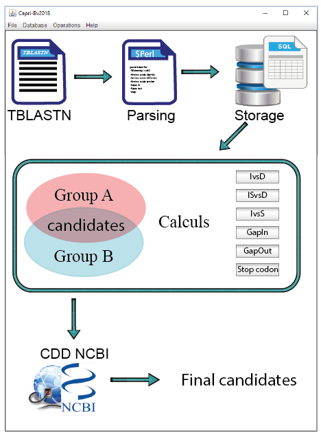

Tutorial
Caprib is a bioinformatics tool that allows researchers to study evolutionary events by comparing whole-bacterial-genome sequences. Overall, this tool generates a list of proteins with amino acids substitutions that are predicted to have impacted biological functions at a given node of evolution. These substitutions may explain the emergence of a given phenotype for a group of bacteria at this particular node of evolution.
Caprib Operations
